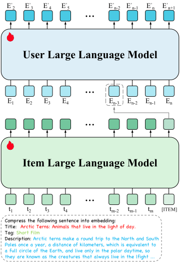
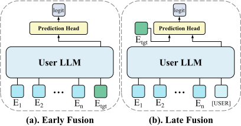
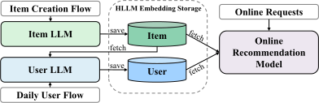

HLLM：通过分层大语言模型进行物品与用户建模以增强序列推荐
摘要
大语言模型（LLM）在各个领域都取得了显著成功，促使若干研究探索其在推荐系统中的潜力。然而，这些尝试迄今为止相较于传统推荐模型仅带来了有限的改进。此外，三个关键问题仍未被充分探索：第一，LLM预训练权重的真实价值——这些权重常被认为封装了世界知识；第二，针对推荐任务进行微调的必要性；最后，LLM能否在推荐系统中展现出与其他领域相同的可扩展性优势。 在本文中，我们提出了一种新颖的分层大语言模型（Hierarchical Large Language Model，HLLM）架构，旨在增强序列推荐系统。我们的方法采用双层模型：第一个Item LLM从物品的详细文本描述中提取丰富的内容特征，而第二个User LLM利用这些特征，基于用户的交互历史预测其未来兴趣。 大量实验表明，我们的方法有效利用了开源LLM的预训练能力，并且进一步微调带来了显著的性能提升。此外，HLLM具有出色的可扩展性，最大配置在物品特征提取和用户兴趣建模上均使用了7B参数。 而且，HLLM提供了出色的训练与服务效率，使其在实际应用中具有可行性。 在两个大规模数据集PixelRec和Amazon Reviews上的评估表明，HLLM取得了最先进的结果，大幅超越了传统的基于ID的模型。 在在线A/B测试中，HLLM展现出显著增益，验证了其在真实推荐场景中的实际影响。代码可在https://github.com/bytedance/HLLM获取。
1 引言
推荐算法是一个经典而复杂的问题，需要理解用户兴趣以预测其跨各种物品的未来行为。有效推荐的关键在于准确建模物品特征和用户特征。目前，主流方法主要基于ID，将物品和用户转换为ID，并创建相应的嵌入表进行编码Goldberg et al. (1992); Koren et al. (2009); Sarwar et al. (2001)。 为了捕捉多样化且随时间变化的用户兴趣，已开发出若干序列建模方法，在序列推荐中展现出显著成功Hidasi et al. (2015); Zhou et al. (2018); Kang and McAuley (2018); Sun et al. (2019)。然而，这些方法通常以嵌入参数为主导，模型规模相对较小，导致两个主要缺陷：对ID特征的严重依赖导致在冷启动场景中性能不佳；以及相对较浅的神经网络难以建模复杂多样的用户兴趣。
随着ChatGPTOpenAI (2022)的出现，大语言模型（LLM）在各个领域取得了重大突破，展现出令人印象深刻的世界知识和推理能力Touvron et al. (2023); Achiam et al. (2023); Team et al. (2023)。这一成功激发了研究人员探索将LLM集成到推荐系统中的兴趣Wu et al. (2023); Li et al. (2023b)。这些探索可大致分为三类方法：（1）。利用LLM为推荐系统提供精炼或补充信息Zhang et al. (2024a); Ren et al. (2024); Xi et al. (2023)，如用户行为摘要和物品信息扩展。（2）。将推荐系统转化为与LLM兼容的对话驱动格式Bao et al. (2023); Friedman et al. (2023); Zhang et al. (2023); Yang et al. (2023); Zhai et al. (2023)。（3）。修改LLM以处理超越纯文本输入输出的推荐任务。这包括将ID特征输入LLM的方法Ning et al. (2024); Zhai et al. (2024); Liao et al. (2024)，以及用LLM替换现有模型、直接针对点击率（CTR）等目标进行优化的方法Cui et al. (2022); Kang et al. (2023)。
尽管取得了这些进展，将LLM与推荐系统集成在复杂性和有效性方面仍面临显著挑战。一个问题是，将用户行为历史以文本形式输入LLM会导致非常长的输入序列。因此，与基于ID的方法相比，LLM需要更长的序列来表示相同时间跨度的用户行为，而LLM中自注意力模块的复杂度随序列长度呈二次方增长。 此外，推荐单个物品需要生成若干文本token，导致多次前向传播，效率较低。 在有效性方面，现有基于LLM的方法相较于传统方法的性能提升并不显著，这引发了LLM的潜力是否被充分实现的疑问。
此外，一些关键问题仍未被充分探索。首先，预训练LLM权重的实际价值——常被视为封装了世界知识——需要进一步研究。虽然LLM提供了令人印象深刻的零样本和少样本能力，但在大规模推荐数据上训练时其价值尚不明确。其次，针对推荐任务进行微调的必要性存疑。在海量语料上预训练的LLM展现出强大的世界知识，但在推荐任务上进一步微调是提升还是降低性能仍有待观察。最后，LLM的可扩展性——这一在其他领域已被验证了缩放定律的标志性特征——需要在推荐系统背景下加以验证。虽然一些研究已成功验证了推荐领域的缩放定律Shin et al. (2023); Zhai et al. (2024)，但这些模型的参数量相较于LLM要少得多。超过1十亿参数的模型在推荐领域是否展现出良好的可扩展性仍是一个开放问题。
为应对这些挑战，本文提出了Hierarchical Large Language Model（HLLM）架构。该方法首先使用LLM提取物品特征。为使LLM能够有效提取这些特征，在每个物品的详细文本描述末尾附加一个特殊token。然后将这一增强后的描述输入LLM（称为Item LLM），并将该特殊token对应的输出用作物品特征。这些物品特征随后被输入第二个LLM（称为User LLM），以建模用户兴趣并预测未来行为。通过将大量物品描述转化为简洁的嵌入，行为序列的长度被缩减至基于ID模型的水平，相较于其他基于文本的LLM推荐模型显著降低了计算复杂度。我们还验证了HLLM相较于基于ID的模型具有显著的训练效率优势，因为它仅需少量训练数据即可超越基于ID的模型。
我们进行了大量实验以探索预训练的价值。尽管HLLM并未以标准LLM的常规方式利用文本交互——例如Item LLM被设计为特征提取器，且User LLM的输入和输出均为物品嵌入——但预训练权重已被证明对两类LLM均有益。这表明LLM中嵌入的世界知识确实对推荐有价值。然而，这并不排除针对推荐目标进行微调的必要性。相反，我们的实验表明，这种微调对于超越传统方法至关重要。为验证可扩展性，在大规模学术数据集上的实验证实，LLM展现出出色的可扩展性，性能随模型参数增加而提升。在有限资源下，高达7十亿参数的模型随着规模增大表现出持续的性能提升。
最终，所提出的HLLM架构在多个学术数据集上优于现有方法，取得了最先进的结果。更重要的是，HLLM的有效性还通过真实世界的在线A/B测试得到验证，确认了其实际适用性。
我们的主要贡献可总结如下：
1）提出了一种新颖的分层LLM（HLLM）框架用于序列推荐。该方法在大规模学术数据集上显著优于经典的基于ID的模型，并已被验证在真实工业环境中带来切实收益。此外，该方法展现出出色的训练与服务效率。
2）HLLM有效地将LLM预训练阶段编码的世界知识迁移到推荐模型中，涵盖物品特征提取和用户兴趣建模。尽管如此，使用推荐目标进行任务特定微调仍是必要的。
3）HLLM展现出出色的可扩展性，性能随着数据量和模型参数的增加而持续提升。这种可扩展性凸显了所提方法应用于更大数据集和模型规模时的潜力。
2 相关工作
传统推荐系统
传统推荐系统主要依赖基于ID的嵌入，如何设计特征交互是一个重要课题。DeepFMGuo et al. (2017)用FM建模低阶特征交互，用DNN建模高阶特征交互。DCNWang et al. (2017, 2021)通过在每一层显式应用特征交叉，可以建模更高阶的交互。此外，一些研究者致力于从用户历史行为中建模用户兴趣。例如，DINZhou et al. (2018)和DIENZhou et al. (2019)引入注意力机制从历史行为中捕捉用户多样化的兴趣。受Transformer启发，SASRecKang and McAuley (2018)将自注意力机制应用于序列推荐。CLUEShin et al. (2023)和HSTUZhai et al. (2024)表明参数量在数亿以内的模型遵循缩放定律。一些工作还将内容特征引入推荐模型，在泛化性上展现出一定优势Baltescu et al. (2022); Li et al. (2023a); Cheng et al. (2024)。
基于语言模型的推荐
LLM的成功吸引了许多研究者探索其在推荐系统中的应用。这些探索可分为三类。首先，LLM被用于总结或补充用户或物品信息Zhang et al. (2024a); Ren et al. (2024); Xi et al. (2023)。例如，RLMRecRen et al. (2024)开发了一种由LLM赋能用户/物品画像范式，并通过跨视图对齐框架将LLM的语义空间与协同关系信号的表示空间对齐。LLM还被用于为冷启动物品生成增强训练信号Wang et al. (2024)。 其次，一些工作将推荐领域数据适配为对话格式Bao et al. (2023); Friedman et al. (2023); Zhang et al. (2023); Yang et al. (2023); Zhai et al. (2023)。

3 方法
在本节中，我们首先介绍问题形式化，然后提出Hierarchical Large Language Model（HLLM），并详细说明如何将预训练大语言模型适配到推荐系统，包括物品特征提取和用户兴趣建模。最后，我们讨论如何使HLLM与推荐系统的目标对齐，从而显著提升其在推荐任务上的性能。
问题形式化
我们研究序列推荐任务，其形式化定义为：给定用户、用户按时间顺序排列的历史交互序列，预测下一个物品，其中是的长度，且。每个物品都有其对应的ID和文本信息（例如标题、标签等），但本文提出的方法仅使用文本信息。
分层大语言模型架构
目前，相当多的基于LLM的推荐模型将用户的历史行为展平为纯文本输入提供给LLMKang et al. (2023); Yang et al. (2023); Li et al. (2024)。这导致输入序列非常长，并且由于LLM中的自注意力模块，复杂度随输入序列长度呈二次增长。为减轻用户序列建模的负担，我们采用一种称为Hierarchical Large Language Model (HLLM)的分层建模方法，将物品建模与用户建模解耦，如图1所示。具体而言，我们首先使用Item LLM提取物品特征，将复杂的文本描述压缩为嵌入表示。然后，我们基于这些物品特征使用User LLM对用户画像进行建模。此外，为确保与预训练LLM更好的兼容性并增强可扩展性，我们引入了最小的结构改动，并设计了简单而高效的训练目标。以下是对物品建模和用户建模的详细介绍。
Item LLM
被提出用于提取物品特征。它以物品的文本描述为输入，输出嵌入表示。LLM在文本理解方面已展现出优异性能，但其使用大多局限于文本生成场景，很少有工作将其用作特征提取器。受先前工作Devlin (2018); Neelakantan et al. (2022)的启发，在物品文本描述的末尾添加一个特殊token [ITEM]以提取特征。
具体而言，如图1所示，对于物品，我们首先将其对应的文本属性展平为句子，并在其前面添加一个固定提示。经过LLM分词器处理后，我们在末尾额外附加一个特殊token [ITEM]，因此Item LLM的输入token序列可表示为，其中表示文本token的长度。将最后一层中对应于特殊token [ITEM]的隐藏状态作为物品嵌入。
User LLM
被设计用于建模用户兴趣，这是推荐系统的另一个关键方面。原始用户历史序列可以通过Item LLM转换为历史特征序列，其中表示的物品嵌入。User LLM以该历史特征序列为输入，并基于先前的交互序列预测下一个物品嵌入。如图1所示，User LLM对应于的输出为，其期望为的嵌入。
与传统LLM的文本输入、文本输出格式不同，此处User LLM的输入和输出均为物品嵌入。因此，我们丢弃预训练LLM中的词嵌入，但保留所有其他预训练权重。实验表明，这些预训练权重对于推理用户兴趣非常有帮助。
面向推荐目标的训练
现有LLM均使用通用自然语言语料进行预训练。尽管它们拥有丰富的世界知识和强大的推理能力，但其能力与推荐系统所需的能力之间仍存在相当大的差距。遵循其他工作Zhou et al. (2024); Touvron et al. (2023)的最佳实践，我们在预训练LLM之上采用监督微调。
推荐系统可分为两类：生成式推荐和判别式推荐。值得注意的是，所提出的HLLM架构适用于这两种类型，仅需对训练目标进行适当调整。以下各节将详细介绍这两类推荐类型的训练目标。
生成式推荐
近期工作Zhai et al. (2024)提供了一种成功的生成式推荐方案，包括召回和排序。我们的方法与其有两个主要区别：模型架构升级为带有预训练权重的大语言模型，输入特征从ID变为文本输入的LLM特征。上述差异对训练和服务策略的影响极小，因此，我们在很大程度上遵循Zhai et al. (2024)中提出的方法。
对于生成式推荐的训练目标，采用下一物品预测，其目标是在给定用户历史中先前物品嵌入的情况下生成下一物品的嵌入。具体而言，训练过程中使用InfoNCE损失Oord et al. (2018)。对于User LLM输出序列中的任意预测，正样本为，负样本则从数据集中随机采样，排除当前用户序列。损失函数可表示为：
| (1) |
其中为带可学习温度参数的相似度函数，表示Item LLM在第j个用户历史交互中产生的第i个物品嵌入，表示User LLM为第j个用户预测的第i个物品嵌入。为负样本数量，表示的第k个负嵌入。表示批次内的用户总数，为用户历史交互的长度。
判别式推荐

由于判别式推荐模型在业界仍占主导地位，我们还提出了HLLM在判别式推荐模型下的应用方案。判别式模型的优化目标是：给定用户序列和目标物品，判断用户是否对目标物品感兴趣（例如，通过点击、点赞、购买等）。
如图2所示，在保持Item LLM不变的情况下，用于判别式推荐的User LLM有两种变体。Early fusion将目标物品嵌入追加到用户历史序列的末尾，然后通过User LLM产生高阶交叉特征，最后将该交叉特征输入预测头以生成最终的logits。另一方面，Late fusion首先以类似于Item LLM特征提取的方式，使用User LLM提取独立于目标物品的用户特征。在用户序列末尾添加一个特殊token [USER]以提取用户表示。然后将用户嵌入和目标物品嵌入一起输入预测头以预测最终的logits。Early fusion由于深度整合了用户兴趣和目标物品，往往表现更好，但难以同时在众多候选项上应用；相反，Late fusion更高效，因为不同候选项共享相同的用户特征，但通常会出现性能下降。
判别式推荐的训练目标通常是分类任务，例如预测用户是否会点击等。以二分类为例，训练损失如下：
| (2) |
其中表示训练样本的标签，表示预测的logit。
根据经验，下一物品预测也可以作为判别式模型中的辅助损失，以进一步提升性能。因此，最终损失可表示如下：
| (3) |
其中控制辅助损失的权重。
4 实验
在本节中，我们首先介绍基本的实验设置，然后进行大量实验以回答以下研究问题：
RQ1：LLM的通用预训练以及使用推荐目标进行微调是否能提升最终的推荐性能？
RQ2：HLLM是否具有良好的可扩展性？
RQ3：与其他最先进模型相比，HLLM的优势是否显著？
RQ4：训练和服务效率与基于ID的模型相比如何？
最后，我们展示如何将HLLM部署到在线场景中并取得实际收益。
数据集与评估设置
| Dataset | #User | #Item | #Interaction |
|---|---|---|---|
| Pixel200K | 200,000 | 96,282 | 3,965,656 |
| Pixel1M | 1,001,822 | 100,541 | 19,886,579 |
| Pixel8M | 8,886,078 | 407,082 | 158,488,652 |
| Books | 694,898 | 686,624 | 10,053,086 |
对于离线实验，我们在两个大规模数据集上评估HLLM：PixelRec（包括三个子集：200K、1M和8M）Cheng et al. (2024)，以及Amazon Book Reviews（Books）McAuley et al. (2015)。与先前工作Cheng et al. (2024); Zhai et al. (2024)一致，我们采用相同的数据预处理和评估协议以确保公平比较。表1和图5给出了这些数据集经过预处理后更详细的分析。我们采用留一法将数据划分为训练集、验证集和测试集。性能使用Recall@K（R@K）和NDCG@K（N@K）指标进行衡量。所有开源数据集仅用于离线实验中的训练和评估。
| Item LLM | User LLM | R@5 | R@10 | N@5 | N@10 |
|---|---|---|---|---|---|
| Scratch | Scratch | 3.330 | 5.063 | 2.199 | 2.755 |
| Scratch | Pre-trained | 3.556 | 5.416 | 2.371 | 2.969 |
| Pre-trained | Scratch | 3.521 | 5.331 | 2.358 | 2.940 |
| Pre-trained | Pre-trained | 3.755 | 5.581 | 2.513 | 3.100 |
基线模型与训练
对于离线实验，使用生成式推荐以与其他方法保持一致。对于在线A/B测试，使用判别式推荐以更好地与在线系统对齐11 1 实验表明，从学术数据集中得出的大多数结论在大规模工业基准上仍然成立。。
在HLLM-1B中，我们对Item LLM和User LLM均使用TinyLlama-1.1B Zhang et al. (2024b)。相应地，在HLLM-7B中，我们对两者均使用Baichuan2-7B Baichuan (2023)。由于资源限制，HLLM在PixelRec和Amazon Reviews上仅训练5个epoch，而其他模型分别训练50和200个epoch。学习率设置为1e-4。每个物品的文本长度被截断至最大256。在PixelRec上，遵循PixelNet Cheng et al. (2024)，我们使用批次大小512。最大序列长度设置为10，正负样本比例为1:5632。在Books上，我们使用批次大小128，设置最大序列长度为50，负样本数量为512。
为公平比较，我们还实现了SASRec-1B（将其网络结构替换为TinyLlama-1.1B）和HSTU-1B，后者使用与TinyLlama-1.1B相同的隐藏大小和层数，但由于去除了传统FFN，仅有462M参数。
预训练与微调（RQ1）
| #Tokens | R@5 | R@10 | N@5 | N@10 | CSR |
|---|---|---|---|---|---|
| 0T | 3.330 | 5.047 | 2.199 | 2.755 | - |
| 0.1T | 3.539 | 5.142 | 2.399 | 2.915 | 46.11 |
| 1T | 3.613 | 5.409 | 2.414 | 2.993 | 50.22 |
| 1T+chat | 3.610 | 5.387 | 2.411 | 2.984 | 51.36 |
| 2T | 3.650 | 5.510 | 2.466 | 3.063 | 51.64 |
| 3T | 3.755 | 5.581 | 2.513 | 3.100 | 52.99 |
| Item LLM | User LLM | R@5 | R@10 | N@5 | N@10 |
|---|---|---|---|---|---|
| Frozen | Learnable | 0.588 | 0.945 | 0.372 | 0.486 |
| Learnable | Frozen | 1.619 | 2.470 | 1.070 | 1.343 |
| Learnable | Learnable | 3.755 | 5.581 | 2.513 | 3.100 |
| SASRec-1B | 1.973 | 2.868 | 1.352 | 1.640 | |
从表2可以清楚地看出，预训练权重对HLLM有益，包括物品特征提取和用户兴趣建模两方面。此外，如表3所示，性能与预训练token数量呈正相关，表明预训练权重的质量也会影响推荐任务。然而，在对话数据上进行监督微调（SFT）可能会导致轻微的负面影响，这可能是因为世界知识主要在预训练阶段获得，而SFT主要增强指令遵循能力，这对推荐任务没有帮助Zhou et al. (2024)。
同样明显的是，如表4所示，同时对Item LLM和User LLM进行微调对于超越基于ID的模型至关重要。当我们冻结Item LLM，仅微调User LLM，使用TinyLlama-1.1B最后一层所有token输出的平均池化作为物品特征时，我们发现性能非常差。这表明，经过下一token预测训练的LLM并不直接适合作为特征提取器。同样，当我们使用已在Pixel200K上微调过的Item LLM并冻结预训练的User LLM时，性能仍然极低。
扩展规模（RQ2）
| Item Model | #Params | R@5 | R@10 | N@5 | N@10 |
|---|---|---|---|---|---|
| BERT-Base | 110M | 2.576 | 4.020 | 1.694 | 2.158 |
| BERT-Large | 340M | 3.032 | 4.635 | 1.993 | 2.508 |
| TinyLlama | 1.1B | 3.484 | 5.239 | 2.319 | 2.883 |
| User Model | #Params | R@5 | R@10 | N@5 | N@10 |
|---|---|---|---|---|---|
| SASRec | 4M | 3.484 | 5.239 | 2.319 | 2.883 |
| Llama-2L | 0.1B | 3.494 | 5.233 | 2.338 | 2.898 |
| TinyLlama | 1.1B | 3.521 | 5.331 | 2.358 | 2.940 |
增加模型参数数量的实验结果如表5和表6所示。可以观察到，Item LLM和User LLM参数数量的增长均持续带来性能提升。 最后，我们在Amazon Books上将Item LLM和User LLM从1十亿参数扩展到7十亿参数。如表7所示，这带来了进一步的性能提升，表明HLLM具有出色的可扩展性。
为了探索数据量的可扩展性，我们从Pixel8M中采样了多种不同规模的数据进行训练，规模从0.1M到8M不等。 从图3可以明显看出，HLLM在不同数据量下都展现出显著的可扩展性。随着数据增加，性能获得显著提升，且在当前数据规模下未观察到性能瓶颈。
我们还在大规模工业推荐数据集上开展了与扩展规模相关的更全面的消融实验，以展示HLLM架构的可扩展性，详细实验结果见附录。
HLLM与SOTA方法的对比（RQ3）
| Dataset | Method | R@10 | R@50 | R@200 | N@10 | N@50 | N@200 | Impv. (avg) |
|---|---|---|---|---|---|---|---|---|
| Pixel8M | Cheng et al. (2024) | 3.589 | - | - | 1.941 | - | - | -27.72% |
| HSTU∗ Zhai et al. (2024) | 4.848 | 10.315 | 18.327 | 2.752 | 3.939 | 5.135 | +0.0% | |
| SASRec∗ | 5.083 | 10.667 | 18.754 | 2.911 | 4.123 | 5.331 | +3.82% | |
| HSTU-1B∗ | 5.120 | 11.010 | 19.393 | 2.879 | 4.159 | 5.411 | +5.37% | |
| SASRec-1B∗ | 5.142 | 10.899 | 19.044 | 2.915 | 4.166 | 5.383 | +4.83% | |
| HLLM-1B (Ours) | 6.129 | 12.475 | 21.179 | 3.539 | 4.919 | 6.221 | +22.93% | |
| Amazon Books | SASRec Kang and McAuley (2018) | 3.06 | 7.54 | 14.31 | 1.64 | 2.60 | 3.62 | +0.0% |
| LEARN Jia et al. (2024) | 4.07 | 9.79 | 18.74 | 2.24 | 3.71 | 4.83 | +34.42% | |
| HSTU-large Zhai et al. (2024) | 4.78 | 10.82 | 19.08 | 2.62 | 3.93 | 5.17 | +47.80% | |
| SASRec∗ | 5.35 | 11.91 | 21.02 | 2.98 | 4.40 | 5.76 | +64.96% | |
| SASRec-1B∗ | 5.09 | 11.11 | 19.45 | 2.86 | 4.17 | 5.42 | +55.68% | |
| HSTU-large∗ | 5.00 | 11.29 | 20.13 | 2.78 | 4.14 | 5.47 | +55.61% | |
| HSTU-1B∗ | 5.25 | 12.03 | 21.60 | 2.89 | 4.36 | 5.80 | +64.37% | |
| HLLM-1B (Ours) | 6.97 | 14.61 | 24.78 | 3.98 | 5.64 | 7.16 | +108.68% | |
| HSTU-large†∗ | 6.49 | 12.22 | 19.81 | 3.99 | 5.24 | 6.38 | +88.94% | |
| HLLM-1B-Scratch† (Ours) | 6.85 | 13.95 | 23.19 | 4.02 | 5.56 | 6.95 | +103.65% | |
| HLLM-1B† (Ours) | 9.28 | 17.34 | 27.22 | 5.65 | 7.41 | 8.89 | +166.42% | |
| HLLM-7B† (Ours) | 9.39 | 17.65 | 27.59 | 5.69 | 7.50 | 8.99 | +169.58% |
在表7中，我们在Pixel8M和Amazon Book Reviews数据集上比较了HLLM与当前最先进模型的性能，包括SASRecKang and McAuley (2018)和HSTUZhai et al. (2024)等基于ID的模型，以及基于文本的模型LEARNJia et al. (2024)。它们均展现出优异的性能，并致力于工业实践。
显然，HLLM具有显著的性能优势，在所有数据集的所有指标上均决定性地优于其他模型。 在相同的实验设置下，与性能最低的基线相比，HLLM-1B在Pixel8M上平均提升22.93%，在Books上平均提升更为显著，达到108.68%。相比之下，基于ID的模型在Pixel8M上最多仅提升5.37%，在Books上最多仅提升64.96%。
此外，值得注意的是，当基于ID的模型增加负样本数量和批大小时，性能提升相对有限，尤其是在R@200上，HSTU-large仅提升0.76，而HLLM-1B在相同设置下提升2.44。 通过进一步增加模型参数，HLLM-7B相较于基线实现了169.58%的显著提升，这非常令人印象深刻。
该表还表明，即使基于ID的模型已完全收敛，增加参数带来的收益也很小。 在Pixel8M上，SASRec-1B和HSTU-1B相较于更小规模均仅表现出相对有限的提升，而在Books上，SASRec-1B甚至在所有指标上出现下降。 相比之下，对于HLLM，从HLLM-1B扩展到HLLM-7B在推荐任务上仍能带来相应的性能提升，展示了HLLM架构的优越性。
训练与服务效率（RQ4）
| Method | R@5 | R@10 | N@5 | N@10 |
|---|---|---|---|---|
| HSTU-1B | 3.501 | 5.120 | 2.358 | 2.879 |
| 3.585 | 5.218 | 2.432 | 2.958 | |
| HLLM-1B | 4.278 | 6.106 | 2.935 | 3.524 |
首先，HLLM在训练数据效率上优于基于ID的模型。如图3所示，HLLM仅需六分之一至四分之一的数据量即可达到与基于ID的方法相当的性能。
此前的大量实验表明，完全微调整个HLLM能显著提升性能，但需要在推理时对所有物品进行实时编码，效率较低。得益于HLLM中物品编码与用户编码的解耦，我们的架构可以通过预先缓存物品嵌入来降低计算复杂度。 为了证明物品缓存的可行性，我们在Pixel8M数据集上用长度超过10的序列预训练HLLM，在第十个位置截断序列以避免数据泄漏，覆盖3百万用户。基于该预训练的HLLM，我们冻结Item LLM，仅在Pixel8M上微调User LLM。表8中的结果表明，虽然冻结Item LLM会导致部分指标下降，但性能仍超过基于ID的模型，证明物品缓存更有效。鉴于工业场景中的用户行为数量远超物品数量，HLLM的训练和服务成本可与基于ID的模型相当。 值得注意的是，我们的预训练数据不足Pixel8M的一半，部分物品未出现在预训练数据中，但我们仍取得了可观的性能。工业数据上的实验表明，随着预训练数据量的增加，物品缓存与完全微调之间的差距被大幅缩小。
在线A/B测试
除离线实验外，HLLM还面向并成功应用于真实世界的工业实践。 为简单、灵活并更好地与在线系统对齐，我们采用HLLM-1B，使用判别式推荐方法并结合后融合变体进行优化。 考虑到性能与效率之间的平衡，我们的训练过程分为以下三个阶段：
阶段一：使用判别损失对HLLM的所有参数进行端到端训练，包括Item LLM和User LLM。 用户历史序列长度截断为150以加速训练。
阶段二：我们首先使用阶段一训练好的Item LLM对推荐系统中所有物品的嵌入进行编码并存储。 然后，我们通过从存储中检索所需的物品嵌入，仅继续训练User LLM。 由于该阶段仅训练User LLM，显著降低了训练需求，使我们能够将用户序列长度从150扩展到1000，进一步增强User LLM的效果。
阶段三：经过前两个阶段的大量数据训练后，HLLM模型参数不再更新。我们为所有用户提取特征，然后将其与物品LLM嵌入及其他现有特征结合，输入到在线推荐模型中进行训练。

在服务方面，如图4所示，物品嵌入在物品创建时提取，用户嵌入每天仅对前一天有活动的用户进行更新。物品和用户的嵌入被存储用于在线模型训练和服务。在这种方式下，在线推荐系统的推理时间几乎不变。
最后，我们在排序任务的在线A/B实验中测试HLLM。关键指标显示出0.705%的显著增长。
5 结论
本文提出了一种新颖的分层大语言模型（HLLM）架构，旨在增强序列推荐。HLLM利用LLM提取物品特征并对用户兴趣建模，有效地将预训练知识融入推荐系统，并证明了使用推荐目标进行微调是必要的。HLLM在更大模型参数下展现出出色的可扩展性。实验表明，HLLM优于传统的基于ID的模型，在学术数据集上取得了最先进的结果。真实世界的在线A/B测试进一步验证了HLLM的实际效率与适用性，标志着推荐系统领域的重大进展。
参考文献
- Gpt-4 technical report. arXiv preprint arXiv:2303.08774. Cited by: §1.
- Baichuan 2: open large-scale language models. arXiv preprint arXiv:2309.10305. Cited by: §4.
- Itemsage: learning product embeddings for shopping recommendations at pinterest. In Proceedings of the 28th ACM SIGKDD Conference on Knowledge Discovery and Data Mining, pp. 2703–2711. Cited by: §2.
- Tallrec: an effective and efficient tuning framework to align large language model with recommendation. In Proceedings of the 17th ACM Conference on Recommender Systems, pp. 1007–1014. Cited by: §1, §2.
- An image dataset for benchmarking recommender systems with raw pixels. In Proceedings of the 2024 SIAM International Conference on Data Mining (SDM), pp. 418–426. Cited by: §2, §4, §4, Table 7.
- M6-rec: generative pretrained language models are open-ended recommender systems. arXiv preprint arXiv:2205.08084. Cited by: §1.
- Bert: pre-training of deep bidirectional transformers for language understanding. arXiv preprint arXiv:1810.04805. Cited by: §3.
- Leveraging large language models in conversational recommender systems. arXiv preprint arXiv:2305.07961. Cited by: §1, §2.
- Using collaborative filtering to weave an information tapestry. Communications of the ACM 35 (12), pp. 61–70. Cited by: §1.
- DeepFM: a factorization-machine based neural network for ctr prediction. arXiv preprint arXiv:1703.04247. Cited by: §2.
- Session-based recommendations with recurrent neural networks. arXiv preprint arXiv:1511.06939. Cited by: §1.
- Knowledge adaptation from large language model to recommendation for practical industrial application. arXiv preprint arXiv:2405.03988. Cited by: §2, §4, Table 7.
- Self-attentive sequential recommendation. In 2018 IEEE international conference on data mining (ICDM), pp. 197–206. Cited by: §1, §2, §4, §4, Table 7.
- Do llms understand user preferences? evaluating llms on user rating prediction. arXiv preprint arXiv:2305.06474. Cited by: §1, §2, §3.
- Matrix factorization techniques for recommender systems. Computer 42 (8), pp. 30–37. Cited by: §1.
- Text is all you need: learning language representations for sequential recommendation. In Proceedings of the 29th ACM SIGKDD Conference on Knowledge Discovery and Data Mining, pp. 1258–1267. Cited by: §2.
- Large language models for generative recommendation: a survey and visionary discussions. arXiv preprint arXiv:2309.01157. Cited by: §1.
- CALRec: contrastive alignment of generative llms for sequential recommendation. arXiv preprint arXiv:2405.02429. Cited by: §2, §3.
- Llara: large language-recommendation assistant. In Proceedings of the 47th International ACM SIGIR Conference on Research and Development in Information Retrieval, pp. 1785–1795. Cited by: §1, §2.
- Image-based recommendations on styles and substitutes. In Proceedings of the 38th international ACM SIGIR conference on research and development in information retrieval, pp. 43–52. Cited by: §4.
- Text and code embeddings by contrastive pre-training. arXiv preprint arXiv:2201.10005. Cited by: §3.
- User-llm: efficient llm contextualization with user embeddings. arXiv preprint arXiv:2402.13598. Cited by: §1.
- Representation learning with contrastive predictive coding. arXiv preprint arXiv:1807.03748. Cited by: §3.
- Introducing chatgpt. Note: https://openai.com/blog/chatgpt Cited by: §1.
- Representation learning with large language models for recommendation. In Proceedings of the ACM on Web Conference 2024, pp. 3464–3475. Cited by: §1, §2.
- Item-based collaborative filtering recommendation algorithms. In Proceedings of the 10th international conference on World Wide Web, pp. 285–295. Cited by: §1.
- Scaling law for recommendation models: towards general-purpose user representations. In Proceedings of the AAAI Conference on Artificial Intelligence, Vol. 37, pp. 4596–4604. Cited by: §1, §2.
- BERT4Rec: sequential recommendation with bidirectional encoder representations from transformer. In Proceedings of the 28th ACM international conference on information and knowledge management, pp. 1441–1450. Cited by: §1.
- Gemini: a family of highly capable multimodal models. arXiv preprint arXiv:2312.11805. Cited by: §1.
- Llama: open and efficient foundation language models. arXiv preprint arXiv:2302.13971. Cited by: §1, §3.
- Large language models as data augmenters for cold-start item recommendation. In Companion Proceedings of the ACM on Web Conference 2024, pp. 726–729. Cited by: §2.
- Deep & cross network for ad click predictions. In Proceedings of the ADKDD’17, pp. 1–7. Cited by: §2.
- Dcn v2: improved deep & cross network and practical lessons for web-scale learning to rank systems. In Proceedings of the web conference 2021, pp. 1785–1797. Cited by: §2.
- A survey on large language models for recommendation. arXiv preprint arXiv:2305.19860. Cited by: §1.
- Towards open-world recommendation with knowledge augmentation from large language models. arXiv preprint arXiv:2306.10933. Cited by: §1, §2.
- Palr: personalization aware llms for recommendation. arXiv preprint arXiv:2305.07622. Cited by: §1, §2, §3.
- Knowledge prompt-tuning for sequential recommendation. In Proceedings of the 31st ACM International Conference on Multimedia, pp. 6451–6461. Cited by: §1, §2.
- Actions speak louder than words: trillion-parameter sequential transducers for generative recommendations. arXiv preprint arXiv:2402.17152. Cited by: §1, §1, §2, §3, §4, §4, §4, Table 7.
- SPAR: personalized content-based recommendation via long engagement attention. arXiv preprint arXiv:2402.10555. Cited by: §1, §2.
- Recommendation as instruction following: a large language model empowered recommendation approach. arXiv preprint arXiv:2305.07001. Cited by: §1, §2.
- Tinyllama: an open-source small language model. arXiv preprint arXiv:2401.02385. Cited by: §4.
- Lima: less is more for alignment. Advances in Neural Information Processing Systems 36. Cited by: §3, §4.
- Deep interest evolution network for click-through rate prediction. In Proceedings of the AAAI conference on artificial intelligence, Vol. 33, pp. 5941–5948. Cited by: §2.
- Deep interest network for click-through rate prediction. In Proceedings of the 24th ACM SIGKDD international conference on knowledge discovery & data mining, pp. 1059–1068. Cited by: §1, §2.
Appendix A 学术数据集上的更多实验
Item LLM的文本输入长度与丰富度
| Tag | Title | Description | Length | R@5 | R@10 |
|---|---|---|---|---|---|
| ✓ | 64 | 0.082 | 0.196 | ||
| ✓ | 64 | 3.520 | 5.317 | ||
| ✓ | ✓ | 64 | 3.610 | 5.439 | |
| ✓ | ✓ | ✓ | 64 | 3.647 | 5.502 |
| ✓ | ✓ | ✓ | 256 | 3.755 | 5.581 |
| Tag | Title | Description | Length | N@5 | N@10 |
|---|---|---|---|---|---|
| ✓ | 64 | 0.049 | 0.086 | ||
| ✓ | 64 | 2.348 | 2.926 | ||
| ✓ | ✓ | 64 | 2.415 | 3.003 | |
| ✓ | ✓ | ✓ | 64 | 2.430 | 3.026 |
| ✓ | ✓ | ✓ | 256 | 2.513 | 3.099 |
默认情况下，我们输入所有类型的文本信息，长度为256。在这里，我们对文本长度和丰富度进行消融实验。 表9表明，文本内容对最终性能有显著影响。更丰富的文本内容和更长的文本长度使Item LLM能够提取更详细的物品特征，更好地区分物品，并更有效地帮助User LLM对用户兴趣建模。
Item LLM特征提取方法
| Method | R@5 | R@10 | N@5 | N@10 |
|---|---|---|---|---|
| Mean Pooling | 3.386 | 5.159 | 2.257 | 2.826 |
| [ITEM] Token | 3.484 | 5.239 | 2.319 | 2.883 |
为使基于下一词元预测训练的LLM具备特征提取能力，我们在文本输入末尾添加了一个特殊词元[ITEM]。另一种可行的特征提取方法是取LLM最后一层隐藏状态的平均值来表示整个句子的特征。表10展示了这两种方法的比较结果。 可以看出，使用[ITEM]词元优于平均池化。
User LLM的序列长度
我们在表11中探讨了User LLM的输入序列长度对HLLM推荐性能的影响。与其他序列推荐器类似，HLLM也能从扩展输入序列长度中受益。尽管表中显示随着序列长度增加性能提升较为有限，但我们推测这很可能是因为如图5所示，学术数据集中的用户序列长度通常相当短。 如附录B所示，在用户行为序列通常很长的真实工业系统中，扩展序列长度能使HLLM获得稳定的性能提升。
| Length | R@5 | R@10 | R@50 | R@200 |
|---|---|---|---|---|
| 10 | 5.201 | 7.564 | 16.220 | 28.776 |
| 30 | 5.235 | 7.605 | 16.293 | 28.837 |
| 50 | 5.238 | 7.631 | 16.416 | 28.959 |
| Length | N@5 | N@10 | N@50 | N@200 |
|---|---|---|---|---|
| 10 | 3.538 | 4.299 | 6.176 | 8.052 |
| 30 | 3.556 | 4.319 | 6.205 | 8.081 |
| 50 | 3.568 | 4.338 | 6.244 | 8.119 |
| Input Features | R@5 | R@10 | N@5 | N@10 |
|---|---|---|---|---|
| Item ID | 4.105 | 6.082 | 2.773 | 3.409 |
| LLM Emb | 5.201 | 7.564 | 3.538 | 4.299 |
| LLM Emb + Item ID | 5.154 | 7.501 | 3.504 | 4.260 |
| LLM Emb + Timestamp | 5.779 | 8.319 | 3.953 | 4.770 |
与基于ID特征的兼容性
在前面的章节中，我们主要基于物品的文本描述对物品和用户特征建模。然而，当前大多数推荐系统仍依赖ID特征，不仅包括物品ID，还包括动作、时间戳和物品类别等ID形式的特征。在这里，我们提出了一种将HLLM与ID特征集成的兼容方案，并证明互补的ID特征在与物品描述结合时确实能为HLLM带来显著提升，进一步凸显其在工业环境中的应用价值。
在这里，我们选择原始物品ID和时间戳作为ID特征进行验证。 物品ID通过嵌入查找表转换为ID嵌入。 行为的时间戳首先被拆分为具体的年、月、日、时、分、秒分量，按算法1获得时间戳嵌入。 我们将ID特征与物品LLM嵌入进行求和池化，然后输入User LLM。 训练期间的预测目标仍为Item LLM提取的物品嵌入，实验结果如表12所示。 引入物品ID实际上导致性能略有下降，很可能是因为物品ID没有提供超出文本描述已捕获信息的增量信息，而文本描述全面描述了物品特征并已被Item LLM充分提取。 然而，引入时间戳带来的提升非常明显，因为时间戳补充了文本描述。这也表明我们的方法可以与基于ID的特征兼容。
Appendix B HLLM在工业数据集上的扩展
我们在大规模工业数据集上开展了更广泛的实验，以评估HLLM的可扩展性。
抖音拥有海量的用户和推荐候选，并积累了丰富的用户行为记录。我们构建了一个包含 30 百万个样本的数据集，样本来自过去 3 年的日志。每个样本仅包含用户的历史点击序列、目标物品，以及一个表示该物品是否被点击的标签。我们在判别式推荐系统中验证 HLLM 的有效性，使用 AUC 作为评价指标，并从两个方面验证其可扩展性：User LLM 的序列长度，以及 Item LLM 和 User LLM 的参数规模。
| Sequence Length | AUC |
|---|---|
| 200 | 0.7429 |
| 500 | 0.7446 |
| 1,000 | 0.7458 |
| Item LLM | User LLM | AUC |
|---|---|---|
| 1B | 1B | 0.7458 |
| 1B | 7B | 0.7498 |
| 7B | 1B | 0.7517 |
| 7B | 7B | 0.7533 |
User LLM 的序列长度
Item LLM 和 User LLM 的参数
表 14 展示了工业场景下 HLLM 参数的影响。对于 Item LLM 和 User LLM，AUC 均随着参数数量的增长而持续提升。